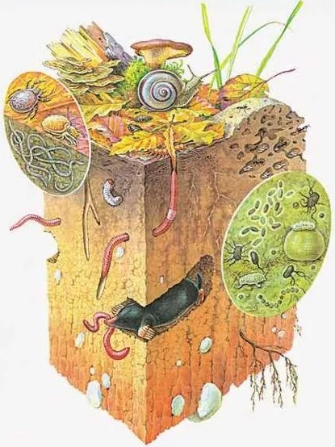
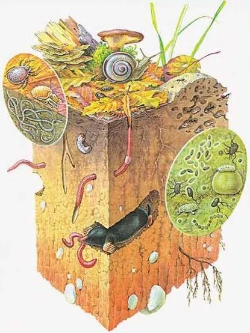

Морфология почв Сумма внешних признаков, которые являются результатом процессов формирования и поэтому отражают происхождение почв, историю их развития, их физические и химические свойства. Перейти к статье

 
